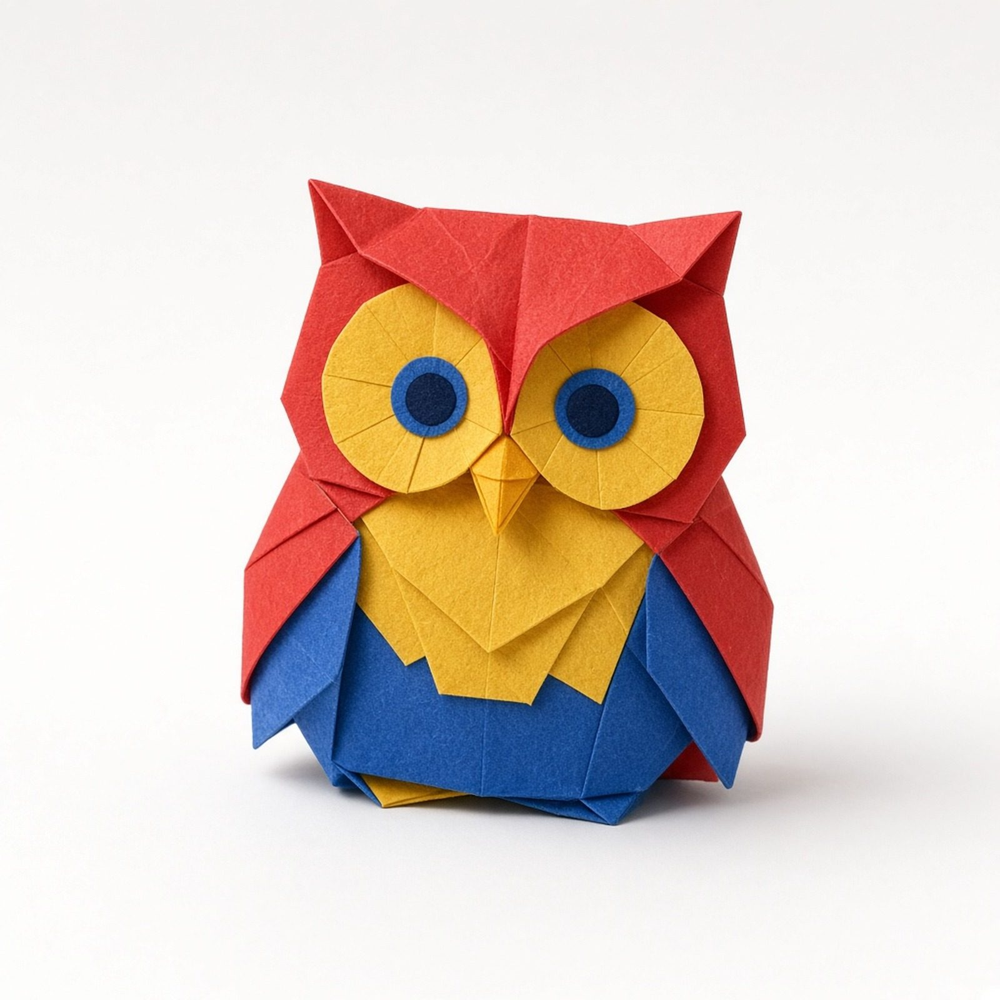
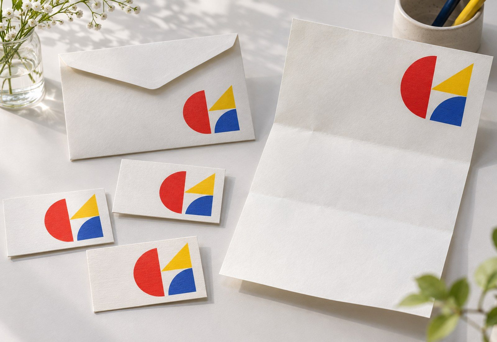
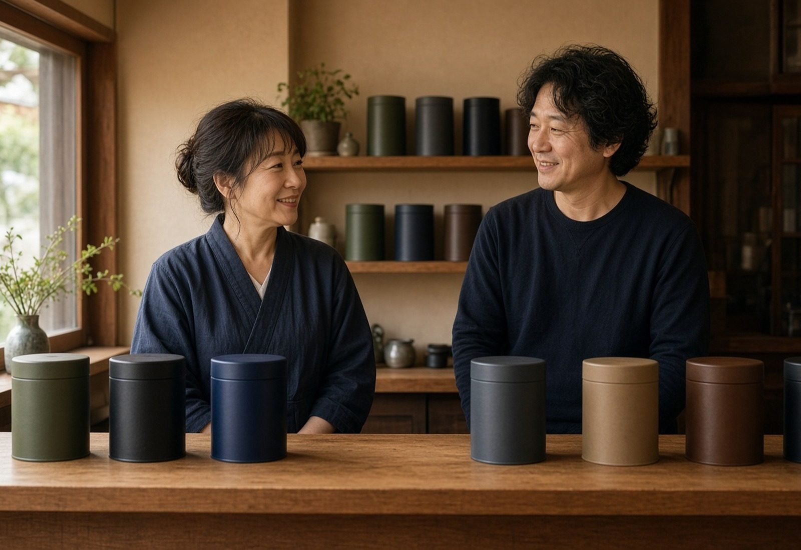
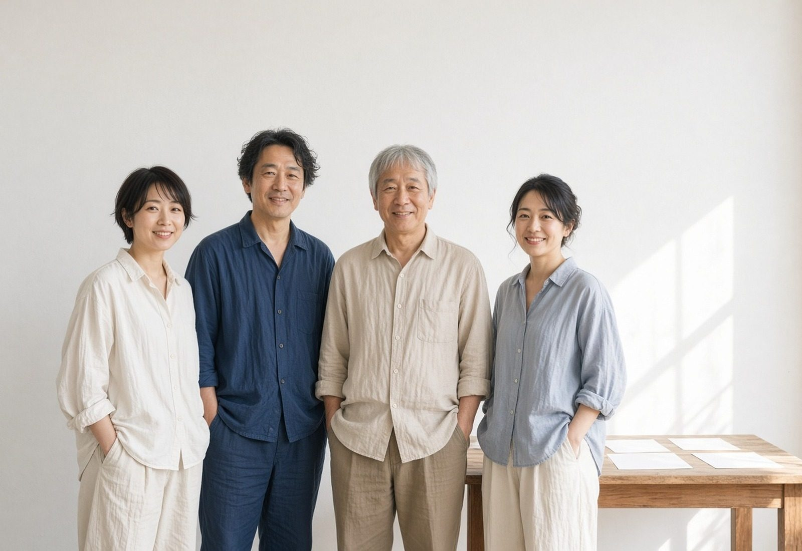

Shapethe shop.
京都の小さなデザイン事務所です。町のお店のロゴ、パッケージ、絵本、Webサイトを、お店の人と話しながらつくっています。
Serviceできること
-
01
Logo & Identityロゴ・ショップツール
お店の顔をひとそろいで。ロゴマークを描くところから、名刺や看板に置いたときの見え方まで決めます。
- ロゴマーク
- 名刺・ショップカード
- 看板・のれん
-
02
Packageパッケージ
箱、袋、ラベル、包装紙。手に取ったときの紙の感触と、刷り上がりの色まで選びます。
- 箱・袋
- ラベル
- 包装紙
-
03
Book絵本・本の装丁
絵本の挿画と装丁、町の冊子やリーフレットの編集とデザイン。
- 挿画
- 装丁
- 冊子の編集
-
04
WebWebサイト
お店の人が自分で更新できる、小さくて読みやすいWebサイトとオンラインショップ。
- Webサイト
- オンラインショップ
- 更新のお手伝い
About私たちについて
まず、お店に行く。話を聞いて、手で描く。長く使えるものだけ渡す。
2012年、京都市の町家の二階で始めた、5人のデザイン事務所です。デザインの前に、お店で一日を過ごすことから始めます。焼きたての匂い、常連さんとの会話、棚の並べ方。そこにある「らしさ」を拾って、色とかたちに置き換えます。
流行りの見た目より、十年後も看板に掛かっていられるものを。
- 名称
- ふくろう舎（Fukuro-sha）
- 設立
- 2012年
- 所在地
- 京都府京都市○○区○○町1-2-3
- 人数
- 5名

Voiceお客様の声

三代続いた店の箱を変えるのは怖かったんです。何度も店に来て、古い茶箱の柄から新しい模様を起こしてくれました。常連さんにも「前より店らしい」と言われます。
茶舗 しろつめ白詰 和子さん・健さん（茶箱のパッケージ、2025年）
Clients主なお取引先
- 茶舗 しろつめ
- パン工房 こむぎ堂
- みずうみ書房
- 紫竹ちょうちん祭
実行委員会 - 左京こども文庫
- 焼菓子 ほとり
- 北白川商店会
- 喫茶 ほそみち

Contactお問い合わせ
ロゴひとつ、ラベル一枚からご相談ください。 電話 075-000-0000（平日10:00〜18:00） メール hello@example.com